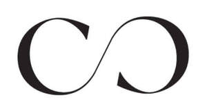

Trade Mark Journal No.2026/008 20 February 2026
UK00004331287 28 January 2026 (10,14,18,20,24,25)

- Class 10
- Eyewear; spectacles; sunglasses; lenses; spectacle frames; cases for spectacles and sunglasses; cords and chains for eyewear.
- Class 14
- Watches; watch straps; watch bracelets; jewellery; jewellery made of or coated with precious or semi-precious metals or stones, or imitations thereof; jewellery made of or with plastics, wire, rubber, silicone, textiles, leather or wood; cufflinks; tie clips; tie pins; ornamental pins; badges of precious metal; key rings, key chains, key fobs, and charms for keyrings; jewellery boxes, caskets and cases; musical jewellery boxes; pouches for jewellery.
- Class 18
- Luggage and carrying bags; umbrellas; bags; beach bags; bags for sports; bags for campers; briefcases; business card cases; card cases [note cases]; cases of leather or leatherboard; credit card cases [wallets]; garment bags for travel; handbags; hat boxes of leather; key cases; luggage tags / baggage tags; music cases; net bags for shopping; pocket wallets; purses; reusable shopping bags; rucksacks / backpacks; school bags / school satchels; suitcase packing organizers / luggage organizers; suitcases; suitcases with wheels; toilet bags, not fitted; travelling bags; travelling sets [leatherware]; trunks [luggage]; valises; vanity cases, not fitted; wheeled shopping bags; infant and baby carriers.
- Class 20
- Furniture; garden furniture; beds; bed fittings; bed frames; bed heads and headboards; bunk beds; futons; sleeping bags and liners; beds for pets; bedding (except linen); mattresses; pillows; sofas; sofa beds; chairs; armchairs; footstools; beanbags; cushions; wardrobes; dressing tables, bedside tables; tables; bookcases; sideboards; desks; bureau; chests of drawers; cabinets; chests; units; storage racks, storage furniture and baskets, ottomans and blanket boxes; shelves; nursery furniture; cots; travel cots; cot bumpers; babies' cradles; cribs; moses baskets; babies' baskets; high chairs for babies and infants; seats adapted for babies, infants and children; bolsters and support pillows for use in baby and child seating; baby walkers; baby bouncers (furniture); baby changing mats; baby changing platforms and tables; playpens for babies; mobiles (decoration); mirrors and frames; hand-held and compact mirrors; picture frames; cork memo boards, notice boards and pin boards; curtain poles, hooks and tie-backs; wooden and reed indoor blinds; ornaments made of wood, wicker or amber; jewellery display stands; parts and fittings for all the aforesaid goods.
- Class 24
- Textiles and textile goods, not included in other classes; plastic material as a substitute for fabric; upholstery fabrics; furniture coverings and loose covers of textile and plastic; cushion covers; throws; household linen; bed linen; blankets; quilts; eiderdowns, duvets and duvet covers; sheets; pillow cases; bed valances; mattress covers and pillow protectors; table linen; table cloths; table runners; table mats and place mats; coasters; napkins; tea towels; wall hangings of textile, curtains; curtain linings; curtain tie-backs; pelmets; shower curtains; bath linen, except clothing; bath mitts; towels and face cloths; textile pads for removing makeup; fitted toilet lid covers of fabric; picnic blankets; travel rugs; sleeping bag liners; textile banners, bunting and flags; diaper changing cloths for babies; handkerchiefs of textile; blankets for household pets.
- Class 25
- Clothing; ready-made clothing; outerclothing; waterproof clothing; coats; dresses; jackets [clothing]; jerseys [clothing]; knitwear [clothing]; shirts; short-sleeve shirts; skirts; smart clothing; suits; sweaters / jumpers [pullovers] / pullovers; tee-shirts; trousers / pants (Am.); waistcoats / vests; underwear; underclothing; brassieres; knickers; slips [underclothing]; hosiery; tights; bodices [lingerie]; corsets [underclothing]; camisoles; pyjamas; dressing gowns; bath robes; hats; scarves; headscarves; shawls; gloves [clothing]; socks; bathing suits; swimsuits; bathing trunks; bathing drawers; bathing caps; rash guards; beach clothes; leggings [leg warmers]; leggings [trousers]; footwear; slippers; headwear.
Next Retail Limited
Representative: Marks & Clerk LLP